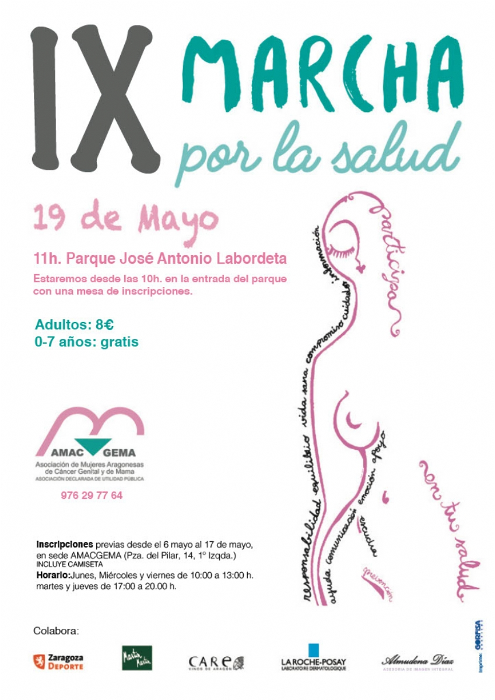

Deporte y Salud
Volver a ProyectosIX Marcha por la Salud
Un evento solidario para promover la actividad física, la visibilidad y el apoyo mutuo.

Sobre la Marcha
La Marcha por la Salud organizada por AMAC-GEMA es una cita anual imprescindible que reúne a cientos de personas para caminar juntas por la salud, la prevención y la visibilidad de las mujeres afectadas por cáncer ginecológico y de mama, fomentando hábitos de vida saludables y la solidaridad ciudadana.
Colaboran:
Zaragoza Deporte, Martin Martin, Care, La Roche-Posay, Almudena Díaz
X Edición
- Fecha: Mayo 2027 (Por determinar).
- Lugar de salida: Por determinar.
Inscripciones Previas
No disponibles todavía